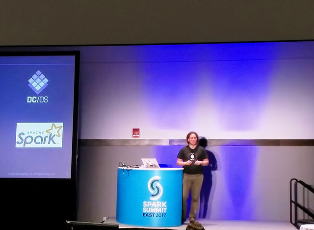
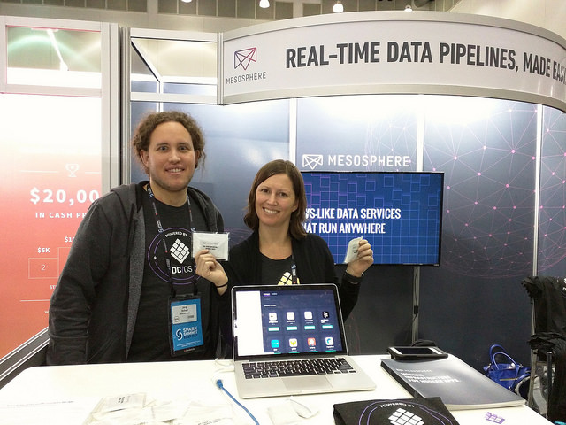

I had the pleasure of attending Spark Summit East 2017 in Boston February 8-9th with my open-source-software-team colleague Jörg Schad. As the name suggests, the conference centered around Apache Spark, the open source large-scale data processing engine.
DC/OS has particularly well-tuned support for running Spark and for integrating it with supporting technologies, including Apache Kafka, Apache Cassandra and others without having to worry about the underlying Mesos-driven infrastructure.
My colleague Jörg gave a 20 minute demo, using Spark to build a geo-enabled Internet of Things (IoT) pipeline to track taxis in New York City.

Jörg Schad presenting at Spark Summit East 2017
His video and slides can be found here: Powering Predictive Mapping at Scale with Spark, Kafka, and Elastic Search. The demo itself is open sourced and available on GitHub if you want to give it a try yourself.
Jörg and I also spent time at the booth where we met folks who use Apache Spark for all kinds of data projects. Some attendees were familiar with DC/OS, and some were new to it like me, giving me a great opportunity—since this was my first booth event since joining Mesosphere—to outline the basics of how DC/OS supports Spark and other fast data services.

Jörg Schad and Kim Garshol at the Mesosphere booth
While at the event, Jörg and I also appeared on DC/OS Office Hours to discuss our impressions of the conference. We noted a lot of talk about Artificial Intelligence and Machine Learning at Spark Summit East, especially in the keynotes. Big data keeps getting bigger, allowing companies to train algorithms to do jobs that, up until now, fell solidly in the human realm. Many talks also discussed live streaming data using Apache Spark, with mechanisms that integrate both archival and streaming data for processing and searches. The video from our Office Hours can be found here.
I wrote more about the event on my personal blog, here.
If you happen to be in Berlin, you can learn about some of the event highlights in person from Jörg at the upcoming Berlin Apache Spark Meetup on Thursday, March 9, 2017 at 7:00 PM.